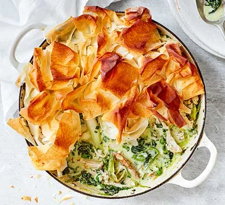

Chicken Pot Pie
Minimise your washing-up with this delicious one-pan chicken pie with spinach and herbs and topped with crispy filo pastry. It's ideal for busy weeknights.
Minimise your washing-up with this delicious one-pan chicken pie with spinach and herbs and topped with crispy filo pastry. It's ideal for busy weeknights.
For an easy side dish to complement a spring roast, just cook this recipe without the salmon.
Dish up an easy, delicious chicken dinner that's full of spring flavours.
A healthy spaghetti dish full of broad beans, leeks and asparagus tips.
If spring is in the air you don't want to be slaving over a hot oven, so make the most of seasonal lamb the easy way with this lazy roast
Use up your leftover fruit buns in this sumptuous spin on traditional bread and butter pudding.